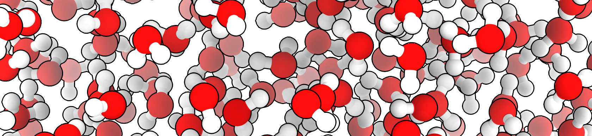

Biochemistry: How & Why – Images#
Welcome to the course information for Chemistry 4410, Physical Organic Chemistry. In this book you will find the syllabus and outline, followed by a detailed description of class activities for each lesson in the course.
Why this Web Book?#
I wanted a single place to present the recipes for all figures and images that were altered or created by myself. Many of my images are composites of works by others and I will describe how I made these images and each source in these recipes. Images that were not altered are credited in the textbook and not described here.
Many images are my own work, but incorporate elements of the creative efforts of others. To better describe their involuntary contributions, I present these instructions for reproducing these images and including more detailed attribution and credit.
How the Images were Made#
The following pages contain the information on how the images and figures in the book were made.
Chapters#
Images, figures, plots and other visualizations presented in the textbook chapters.
The textbook chapters do not have numbers in this web book. The order in the print textbook changes with each revision, and I didn’t want to have to track that here. The chapters are mostly in the order presented in the textbook.
This Web Book#
The images used only in pages ofm this web book
Other#
Images and figures that are not used. These are likely unfinished, rejected or experiments in learning the tools. I keep them here so that I can find them again.